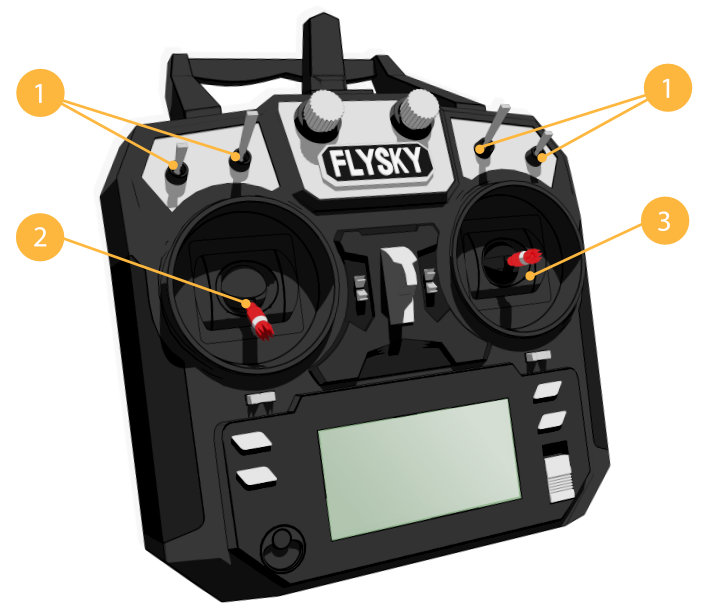
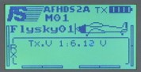
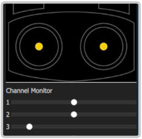

Possible radio failures
The remote is blocked
If the remote is blocked, the LCD will read: "Warning. Place all switches in their up position and lower the throttle".
To unlock the controller, place all sticks and switches to the initial position, namely:
- The left stick (1) to the central bottom position.
- Switches A, B, C, D (2) to the position “away from yourself”.
- The right stick (3) to the center.

No communication with the receiver
To test the remote connection with the receiver, turn on the remote and watch the readouts on the LCD Screen.
Communication with the receiver is absent:

Communication with the receiver established:

If there is no communication:
- Make sure the receiver is enabled (the red LED is blinking). If the LED remains constantly ON, it means that communication is established with another remote.
- Pair the remote and the receiver.
No communication with the flight controller
If there is no communication with the flight controller, the screen of the computer monitor in the Channel Monitor window will not display changes in the position of the sliders when the sticks of your remote are shifted.

- Go to MENU (by holding down the “OK” button)
- Select menu “System setup” (Up/Down Button to navigate, OK button - to confirms the choice).
- Select “RX setup” > “PPM OUTPUT” > “On”
- Save changes (hold pressed the “CANCEL” button).